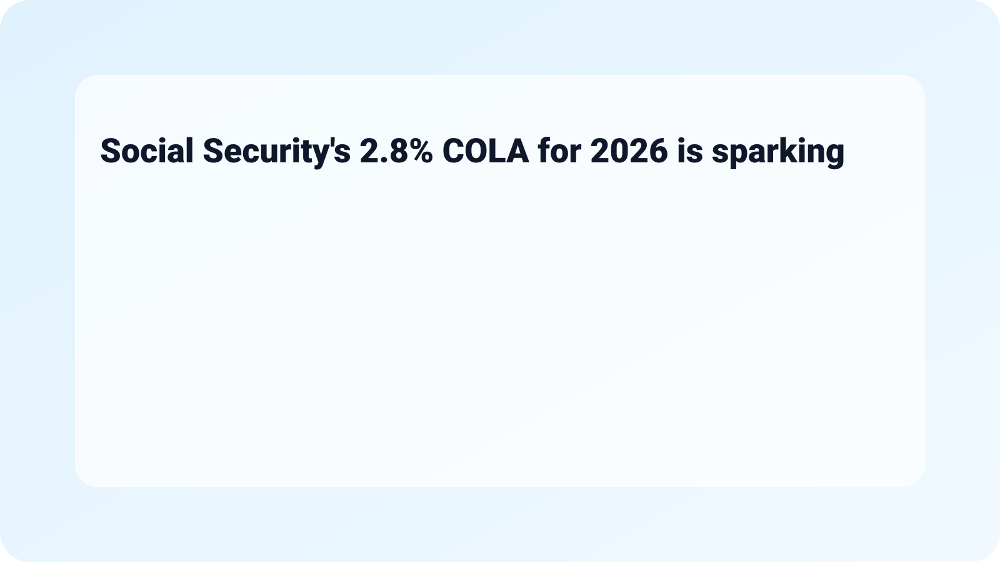

Social Security's 2.8% COLA for 2026: Overview
Social Security's 2.8% COLA for 2026 is sparking debate over how the annual increase gets calculated, leading many to question the effectiveness and fairness of the current formula used by the Social Security Administration (SSA). The adjustment aims to help beneficiaries keep up with inflation, but critics argue that the method does not reflect their real-world expenses.
What Happened
The Cost of Living Adjustment (COLA) for Social Security and Supplemental Security Income (SSI) is based on the Consumer Price Index for Urban Wage Earners and Clerical Workers (CPI-W). For 2026, the decision to implement a 2.8% increase was announced following a rise in inflation in the previous year. This increase reflects a continuation of adjustments made to counteract inflationary pressures faced by seniors and disabled individuals.

Why It Matters
With many Americans relying on Social Security benefits as their primary source of income, the adequacy of these COLA adjustments is a critical issue. A 2.8% increase may provide some relief, but numerous advocacy groups argue that the methodology used might not encompass the true costs that beneficiaries face, particularly in areas such as healthcare and housing.
Understanding the COLA Calculation
The process for calculating the COLA can be complex and is rooted in economic data that reflect price changes. The CPI-W is intended to track inflation experienced by wage earners, but for many retirees, expenses can vary significantly. Those relying heavily on healthcare often find that their costs are increasing faster than general inflation, which can lead to financial strain.

Quick Checklist: Factors Influencing COLA
- Tracking the CPI-W accurately.
- Considering unique expenses faced by seniors, such as healthcare and housing.
- Reviewing the adjustment on an annual basis to reflect true living costs.
Practical Tips for Beneficiaries
- Stay Informed: Keep an eye on governmental announcements regarding COLA adjustments to plan your finances accordingly.
- Budget Wisely: Factor in potential increases in healthcare and housing costs, which may not be fully covered by the COLA.
- Engage in Advocacy: Support organizations that advocate for a more accurate COLA calculation reflecting the realities faced by beneficiaries.

Debate Surrounding the New Increase
The 2.8% COLA for 2026 has prompted renewed discussions about the broader Social Security system and its sustainability. Some argue that the current calculation should include other indices, while others believe that it could lead to financial instability for the program if it results in higher payouts.
Concerns Among Stakeholders
Various stakeholders from government, social organizations, and financial sectors emphasize the need for a thorough reassessment of how COLAs are calculated. Advocacy groups assert that the current formula often fails to consider the distinct financial landscapes faced by seniors. Additionally, there are concerns that continued inflation could endanger the sustainability of Social Security.

Frequently Asked Questions (FAQ)
- What is COLA?
COLA stands for Cost of Living Adjustment, which is an increase applied to Social Security benefits to keep pace with inflation. - How is the COLA percentage determined?
The percentage is determined using the Consumer Price Index for Urban Wage Earners and Clerical Workers (CPI-W). - Will the COLA for 2026 be enough to cover increased costs?
This is subjective and greatly depends on individual circumstances, particularly concerning healthcare and living expenses. - How often does the COLA get adjusted?
The COLA is adjusted annually, based on inflation data collected from the previous year.

Next Steps for Beneficiaries
For individuals who depend on Social Security, understanding the adjustments and advocating for changes in calculations is essential. Being proactive not only empowers beneficiaries but also contributes to larger conversations about the welfare of seniors.
Get Involved
Consider engaging with local advocacy groups to learn how you can make a difference. By advocating for modifications in how COLA is calculated, you can help ensure that future adjustments better reflect the real costs faced by senior citizens and those reliant on Social Security.

Conclusion
In summary, Social Security's 2.8% COLA for 2026 is an important development in the ongoing efforts to support beneficiaries amid rising costs. Given the growing discussions on the methodology of these adjustments, it is vital for stakeholders to stay informed and engaged. As we move forward, scrutinizing these calculations will help shape a more equitable social safety net for all Americans.
Related on MingMong: 5 Things About Vivo’s next phone will launch with a professional camera rig (2026) and 2026: Missing student's family 'continue to keep hope alive'
Source: Link